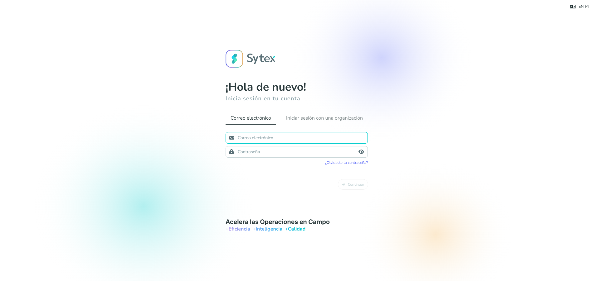
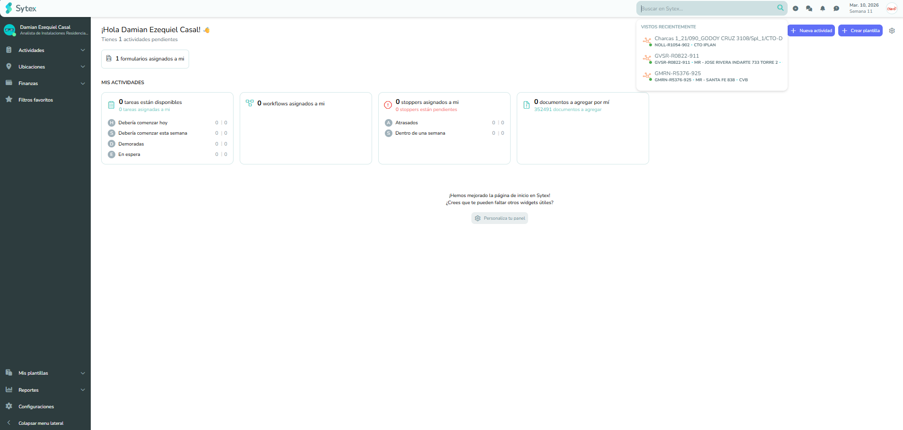
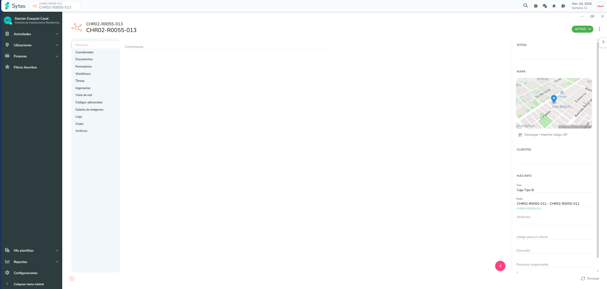
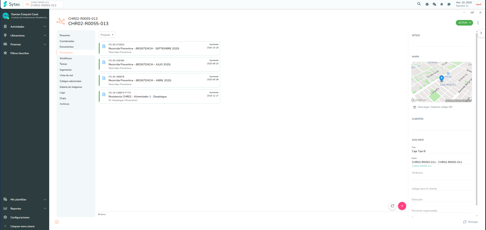
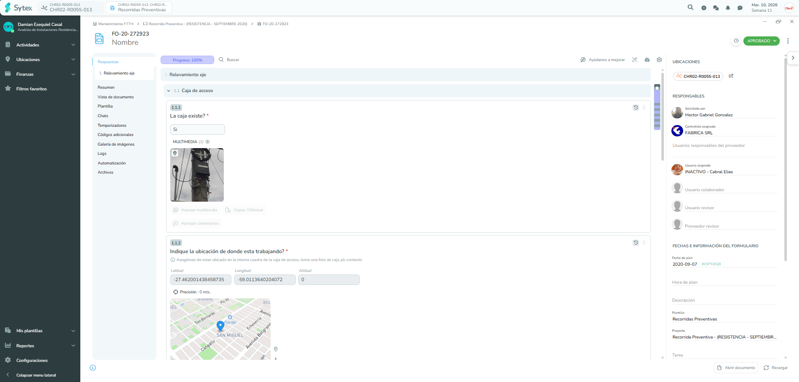
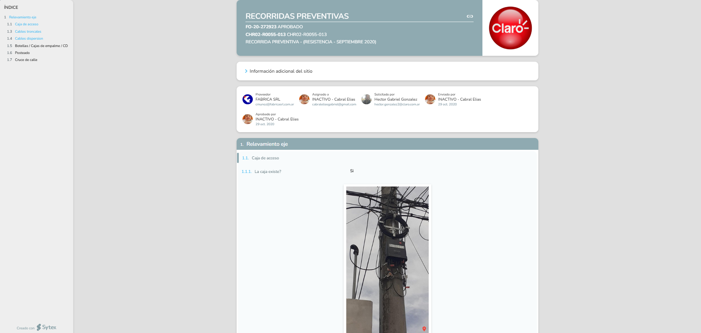

Este documento detalla el procedimiento para ingresar a la plataforma Sytex y gestionar correctamente la visualización técnica de splitters.
Para ingresar a la plataforma, utilice el siguiente enlace:
Debe acceder utilizando su correo electronico y la contraseña correspondiente.

PANTALLA DE INICIO DE SESIÓNVamos a la búsqueda del formulario del splitter desde el icono de la lupa. Al dejar el puntero se extenderá para pegar el acrónimo.

HERRAMIENTA DE BÚSQUEDABuscaremos el acrónimo de ejemplo y seleccionamos la pestaña “Formularios” una vez que cargue la búsqueda.

FILTROS DE BÚSQUEDADe los formularios que encontraremos seleccionaremos la que se encuentre aprobada.
IMPORTANTE
Siempre se deben ver los formularios aprobados.

VALIDACIÓN DE ESTADOPresione sobre los 3 puntos para que se abra el desplegable y elegir la opción de “Ver documento”.

MENÚ DE OPCIONESSe abrirá una nueva página con fotos y descripción del splitter donde se encuentra ubicado.

VISTA TÉCNICA FINALEn el siguiente video podrán observar el paso a paso mencionado anteriormente.